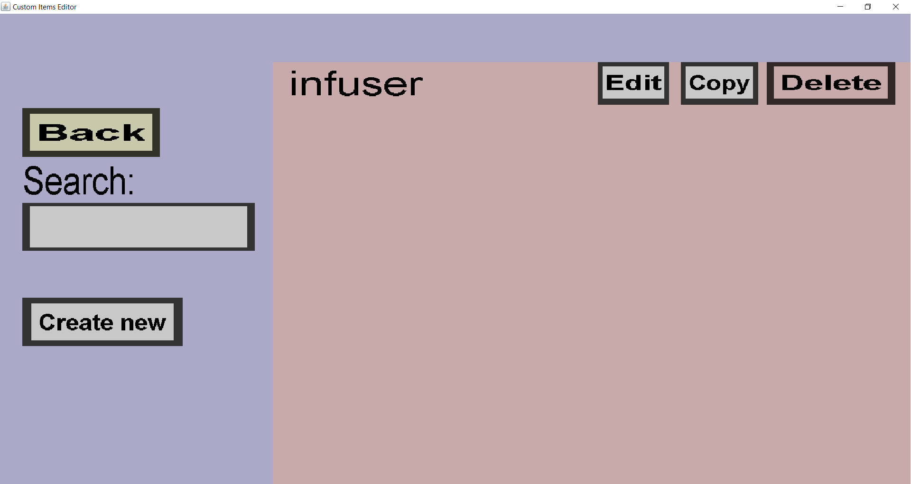

The container overview shows all custom containers you have made so far (in the item set you
are currently working on). From this overview, you can edit, copy and delete your custom
containers, as well as adding new ones. If you have a single custom container called 'infuser',
it should look like this:

-
The 'Back' button will take you back to the container portal
-
The text edit field below 'Search:' can be used to filter on the names of custom containers.
Only the containers whose name contains the text in that field will be shown.
-
The 'Create new' button will take you to the container edit menu,
where you can create a new custom container.
-
The 'Edit' button will take you to the container edit menu, where
you can edit the corresponding custom container (in this case my 'infuser' container).
-
The 'Copy' button will also take you to the container edit menu.
It will look like you are editing the corresponding container, but clicking 'Create' will
create a new custom container instead. Note that you will need to change the name because
no two containers can have the same name.
-
The 'Delete' button will remove the corresponding custom container (in this case 'infuser').